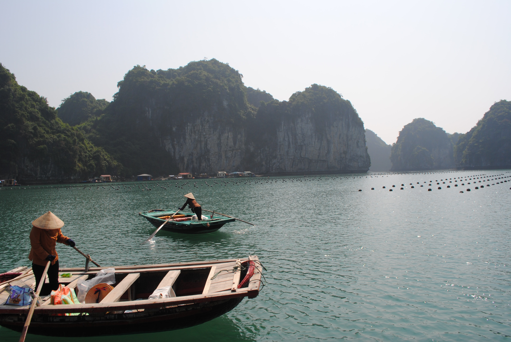

<!DOCTYPE html>
<html>
  <head>
    <meta charset="utf-8">
    <title></title>
  </head>
</html>
<head>
  <title>BuTa의 웹페이지 "부웹"</title>
  <meta charset="utf-8">
</head>
<body>
  <h1><a href="index.html">BuTa의 웹페이지 "부웹"</a></h1>
  <ol>
    <li><a href="1.html">베트남 생활</a></li>
    <li><a href="2.html">코딩 배우기</a></li>
    <li><a href="3.html">외국어 공부</a></li>
  </ol>
  <strong><h2>부웹</h2></strong>
  <br>현재 <a href="https://www.mofa.go.kr/www/wpge/m_24316/contents.do" target="_blank" title="외교부 홈페이지">동남아시아</a>에 살고 있습니다.
  <p>
  잠시, 동남아시아에 대해서 알고 가실까요? 출발~~^^
  <br>아프로-유라시아 대륙의 인도차이나 반도, 말레이 반도와 필리핀 군도 및 말레이 제도 전역을 일컫는 지역명이다.
  산업화 이후로 폭발적인 인구성장을 보이고 있다.
  <br>그래도 2000년대 들어서는 태국, 싱가포르 의 인구성장은 인구치환율을 밑돌거나 간신히 유지할 정도로 점차 주춤해져가는 추세로 접어들었으며 인구감소를 걱정해야 할 정도가 되었다.
  <br>미얀마, 베트남, 말레이시아, 인도네시아 , 필리핀 의 경우는 출산율이 2명대로 상당히 안정적인 인구 성장을 보이고 있다.
  
  <p>반면 라오스, 캄보디아, 동티모르, 필리핀는 괄목할 정도의 인구 성장을 보이는 형편인데 문제는 이들 나라들이 대단히 낙후했고 발전할 기미가 안 보인다는 게 문제다.
  경제적으로는 선진국인 싱가포르를 뺀 모든 나라가 개발도상국이다. 그렇기에 우리가 흔히 인식하는 동남아시아는 싱가포르 하나를 빼면 후진 지역이라는 고정관념이 있다. 오히려 싱가포르는 호주, 뉴질랜드와 같이 영어권으로 묶이거나 상당한 화교 비율 때문에 한자 문화권으로 묶이기도 한다만 한자 문화권은 영어 사용 국가에 속하여 영어 표기가 우선시되는지라 맞는 분류는 아니다. 기성세대들이 간혹 한자 문화권에 싱가포르를 포함했으나 젊은 세대는 그저 영미권으로만 인식한다.
  태국은 1인당 국민소득이 아직 명목 7,600달러, PPP 2만 달러 정도인 선진 개발도상국으로 어느 정도 현대화가 이루어져 있고 수도 방콕은 글로벌한 도시이지만 생활 인프라가 방콕 수도권에 지나칠 정도로 집중되어 있고, 부정부패, 빈부격차, 저출산 문제 역시 심각하여 최근 성장세가 꺾인 관계로 선진국 진입 전망이 어둡다.
  캄보디아, 미얀마 등은 빈곤국으로 인력 송출, 관광업, 농업, 자원 수출 등으로 먹고 사는 신세이고 공업화나 시설 현대화는 초기 단계에 머물러 있다. 미얀마는 2021년 군사 쿠데타 이후 군부 정권과 반군부 저항 세력, 카친, 카렌족 등 소수민족 반군 간의 내전으로 혼란에 빠진 상황이다.
  필리핀, 베트남 등은 최근 앞의 두 국가와 산업이 비슷하나 이들보다는 경제가 괜찮은 편이고, 2010년대에 높은 성장률을 보이고 있으며, 산업화도 꽤 빠르게 진행되고 있기는 하지만, 동남아시아 선도 국가인 태국과 말레이시아와의 격차가 이미 상당히 벌어진 상황이다. 발전 방식도 말레이시아와 태국이 예전에 해왔던 경제발전 노하우를 벤치마킹한 형식인지라 독자적인 경제개발 노선을 개발하지 않는 이상 중진국 이상이 될 수 없다. 베트남은 공산국가 특유의 강력한 공권력을 기반으로 개발독재가 진행 중이며 필리핀은 불안한 치안, 심각한 부정부패와 빈부격차, 제조업의 부재가 발목을 잡는다.</p>
  <p>라오스의 경우 1인당 GDP 수준은 필리핀, 베트남과 유사하고 최근 농업, 수력 산업, 관광 등에 집중하여 높은 성장률을 보이고 있기는 하나, 중국과 태국 등 인근 국가에 과도하게 의존적인 경제 구조를 가지고 있으며 공공부채가 급증하고 있으므로 위태롭다.
  인도네시아는 경제규모가 세계 15위 정도로 동남아시아에서 가장 큰 경제대국이나, 1인당 국민소득이 명목 4,100달러, PPP 14,000달러 정도에 불과한 낮은 수준의 개발도상국이다. 1996년~1997년 아시아 경제위기로 -10% 대의 경제하락을 겪으며 크게 흔들린 이후, 21세기 초부터 꾸준히 안정적인 성장세를 보이고 있지만 중국이나 인도 수준의 고성장세는 아니다. 비효율성이 만연한 제도와 고질적인 부정부패, 기술 및 고등교육 부문의 상대적 투자 저조, 심각한 빈부격차 등 산적한 문제로 고소득 개발도상국 혹은 선진국으로의 도약이 가능할지는 미지수다.
  산유국인 군소국가 브루나이는 꽤 잘 살지만 석유에만 모든 산업을 의존하며 그외의 별다른 산업이 없다. 게다가 2010년대 이후론 1인당 국민소득이 반토막나는 등 현재 경제구조가 매우 위태롭다.
  말레이시아는 1인당 국민소득이 1만달러 초반대, PPP 3만 달러 정도로 싱가포르 다음으로 잘 사는 나라이고 국제적으로도 상위권 개발도상국(Top-middle) 정도의 경제적 지위를 갖고 있지만, 미성숙한 민주주의로 인한 권위주의적 정치의식과 자원에 편향적인 경제구조, 말레이계와 중국/인도계 간의 빈부격차, 인종차별 갈등문제 등 아직 후진국적인 면모가 사회 곳곳에 만연해 있어 아직 여러모로 부족한 점이 많다.
  </p>
  </body>
  </html>
